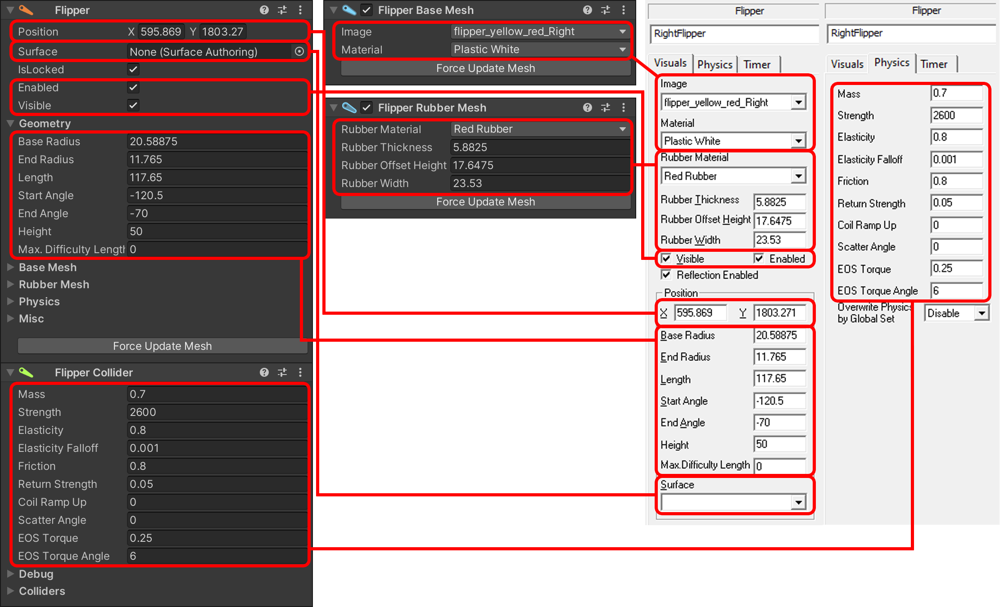

Unity Components
When loading or creating a table in Unity, what you're creating is a hierarchy of GameObjects, the basic building blocks of Unity scenes. By default we group game items by their type when importing, but you can arrange them however you want.
To give the GameObjects behavior during gameplay, we add components onto them. VPE comes with a large number of components that are used to set up and control the game mechanisms of the table, and advanced programmers can contibute new ones.
If you've never heard about GameObjects or components, we recommmend you read through the links in the first two paragraphs. They are short, to the point, and a much better introduction than we could provide here.
Components vs Game Items
In Visual Pinball, components are what you see in the options panel when you click on a game item. You'll typically find sections for adjusting physical behavior, visual display, and geometric shape of the game item you're editing. Internally, all of these sections belong to the same game item.
In VPE, we have separate components for each of these sections. There are four different types of components:
- The Main Component represents the actual game item.
- A Collider Component adds physical behavior to the game item. It defines how the item interacts with other objects, for example what bounciness, friction and randomness is applied to a pinball hitting the item.
- Mesh Components generate meshes, i.e. the geometry used to render the object on the playfield. The results are the procedurally generated 3D objects rendered in the scene.
- Animation components apply movement to the game item. If the entire object is moving (for example a flipper), that is handled by the collision component, but for items where only parts move (e.g. the plate of a gate, or the ring of a bumper) these components apply the movement to the GameObject.
Let's look at a flipper:

Here, we see the main component (Flipper), the collider component (Flipper Collider), and two mesh components (Flipper Base Mesh and Flipper Rubber Mesh) inside VPE compared to Visual Pinball. While the main and collider component sit on the base GameObject, each mesh component is on its own child GameObject. This is how Unity works - a GameObject only contains one component of each type.